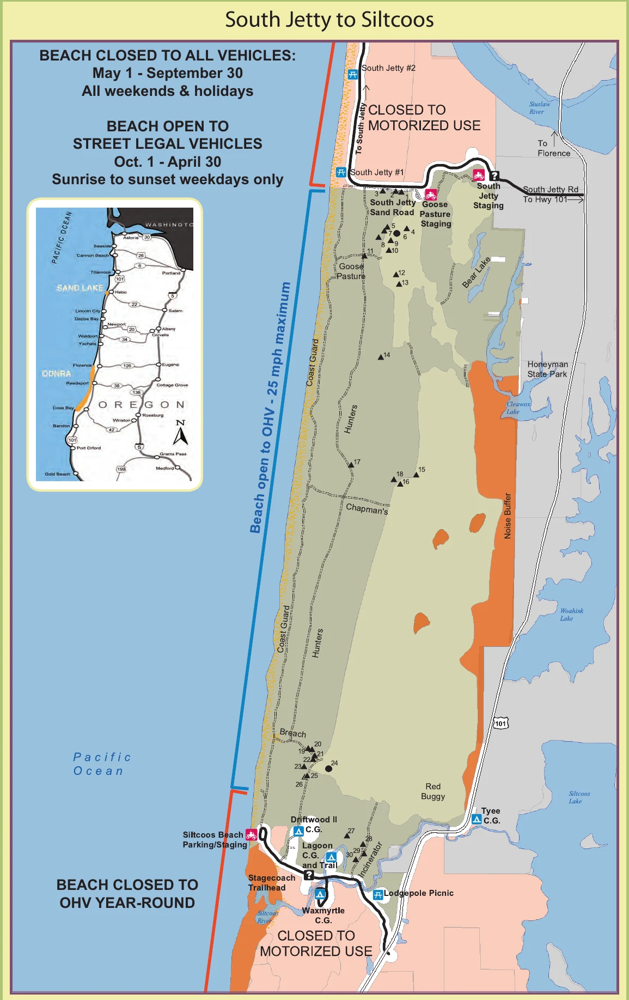

Open sand, tree islands, designated connectors, and two major access corridors.
FLORENCE RIDING AREA
South Jetty
to Siltcoos.
One clear page for the riding map, three useful staging choices, named trail connections, nearby OHV camping, and GPS directions.
Multiple staging choices make it easier to choose a shorter or more ambitious day.
Choose the staging area closest to the part of the zone you plan to ride.
OFFICIAL RIDING-AREA MAP
See the whole zone
before choosing a start.
This Forest Service map is excellent for orientation. Use the buttons beside it for current GPS directions and download the current MVUM before riding.

TRAIL STARTS & CONNECTIONS
Know what each entrance connects to.
South Jetty OHV Trail
Start from South Jetty staging for the north end of the riding area and connections toward Hunters and Coast Guard North trails.
Hunters OHV Trail
This north-south forested sand route can be entered near Goosepasture or from the Driftwood II side. It may flood seasonally.
Coast Guard North
A major north-south connection between the South Jetty and Siltcoos portions of the zone. Watch for signed beach and habitat restrictions.
Chapman’s & Breach
Named connections near the southern half of the zone help link open sand, Driftwood II, and the Siltcoos access corridor.
CAMPING NEAR THE RIDING AREA
Stay close to the entrance you will use.
South Jetty sand camps
Designated sand camps are reached by soft-sand routes and require the right vehicle, reservations, and current access confirmation.
Check reservations ↗Driftwood II
OHV-oriented camping near the southern end of the riding zone with direct connection toward Siltcoos-area trails.
Open GPS ↗Siltcoos sand camps
Designated sites sit within the southern riding area. Confirm reservation, group-size, and vehicle requirements before arrival.
Check reservations ↗TAKE IT OFFLINE
Your phone can show your position without service.
Before leaving Wi-Fi, install Avenza Maps and download the free current Siuslaw Map 2. The Forest Service recommends carrying a paper map as backup.
- 1Install Avenza Maps on the phone you will carry.
- 2Download the free Siuslaw Map 2 while you have service.
- 3Open the map and confirm the GPS location marker works before staging.
BEFORE THE ENGINES START